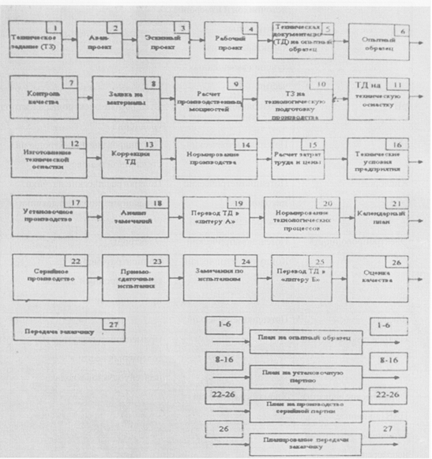

Вопрос 8: Какие «обратные связи» существуют в процессе проектирования и производства?
Источники: Тема 2.doc
На рисунке изображено что-то похожее на обратные связи.
Выход с последней связи, скорее всего, должен идти на этап 26.
Если это не так, эта связь не является обратной и её не нужно отвечать.
Этапы перечислены в Вопрос 6: Выделите в традиционном процессе проектирования и производства то, что относится к проектированию..

Информация с консультации:
Обратные связи
Извещения об изменениях - изменение документации (ТЗ)
Например, если не могут сделать продукт по представленному ТЗ
Например, выполняем схему усилителя. При расчетах понимаем, что элементная база не соответствует ТЗ (На уровне схемотехнического проектирования)